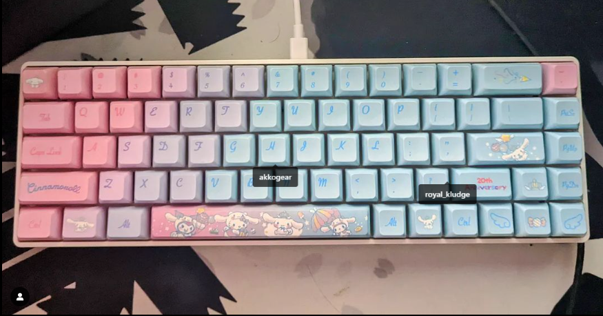
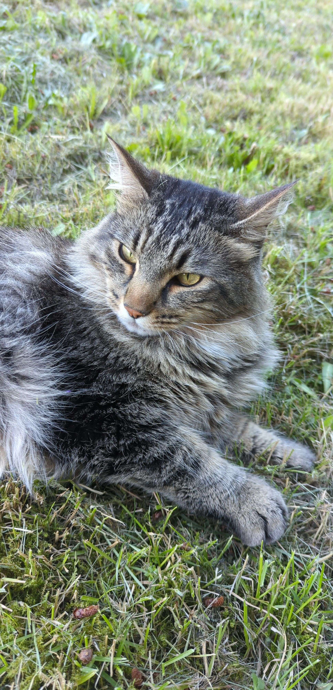
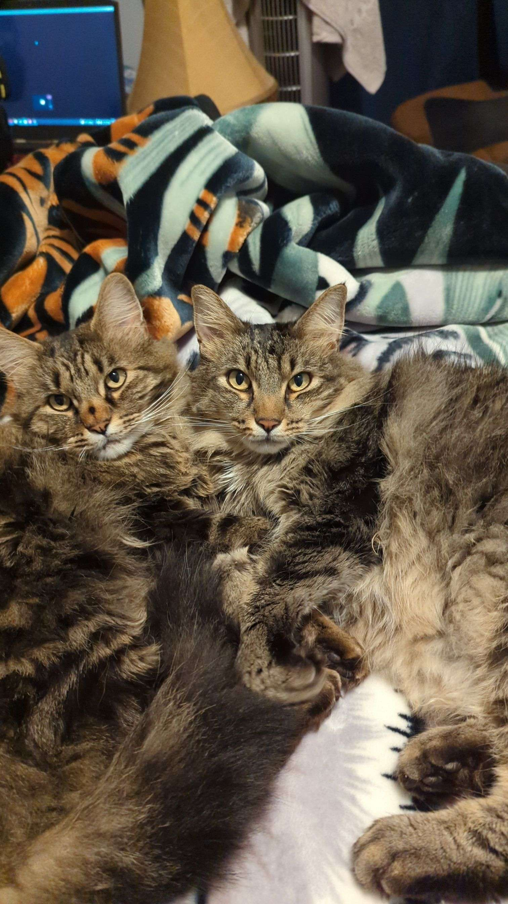

Introduction
I'm a 20-year-old computer science major in college who is becoming more knowledgeable in machine learning and web development. Aside from my academic endeavors, I have a strong interest in gaming and keyboard building.

Philosophy
I really think that perseverance and a development mentality are powerful. I consider cooperation and information exchange to be essential components of my professional development, and I'm dedicated to lifelong learning and remaining current with technological advancements..

Personal Life
My two cats, Gin and Traveler, have been my companions since they were kittens in 2019. They are a joyful part of my life and offer endless inspiration. Although not a frequent traveler, I've enjoyed my time exploring places like California and Missouri.
